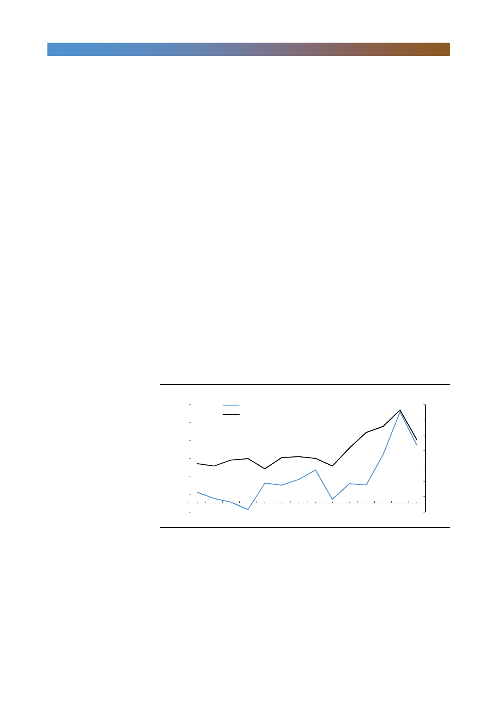

삼성전자(005930)
스마트폰 사업의 전략 변화로 인한 수익성 악화 위험
스마트폰 사업의 전략변화가 예상된다. 2014년 스마트폰 산업의 성장성이 둔화
되기 시작한 이후 삼성전자의 스마트폰 사업은 물량보다는 수익성 위주의 사업전
략을 펼쳐왔다. 하지만, 출하량 감소폭이 예상보다 커짐에 따라 점유율을 확보하
기 위한 전략으로 선회할 전망이다. 점유율 확보 전략이 성공할 경우 출하량이 회
복되고 수익성도 개선될 수 있지만 당분간 고스펙 전략으로 인한 수익성 악화 위
험이 높아질 것이다. 2018년 IM부문의 영업이익은 10.8조원으로 전년대비 8%
감소하고 2019년에도 다시 10.2조원으로 이익이 감소할 전망이다.
서버디램 수요증가율 둔화 가능성
지금 디램산업의 수급을 지탱해주는 제품은 서버디램이다. 클라우드 컴퓨팅서비
스업체들의 설비투자가 큰 폭으로 증가하면서 데이터센터 구축에 필요한 서버디
램 수요가 강세를 유지하고 있다. 그런데 일부 선두업체를 중심으로 설비투자 증
가율 둔화의 움직임이 나타나고 있다. 지난 2분기 실적발표를 통해 클라우드 컴
퓨팅 산업 점유율 1, 2위 업체인 아마존과 마이크로소프트가 설비투자 증가율이
둔화될 것으로 언급했다. 2016년부터 이들 업체의 설비투자 증가율과 서버디램
수요증가율 간에 상관관계가 높아졌다는 점을 고려하면 향후 서버디램의 수요증
가율 둔화가 예상된다. 수요증가율이 여전히 다른 application대비 높은 수준이기
는 하지만 서버디램 외 다른 디램 application의 수요가 부진한 상황이어서 서버
디램 수요증가세가 둔화될 경우 디램 수급에 부정적 영향이 예상된다.
[그림 1] 주요 클라우드 컴퓨팅 서비스업체 설비투자 vs. 서버디램 출하량 증가율
(% YoY)
110
90
70
50
30
10
주요 클라우드 컴퓨팅 서비스업체 설비투자 증가율(좌)
서버디램 출하량 증가율(우)
(% YoY)
70
60
50
40
30
20
10
(10)
0
1Q15
3Q15
1Q16
3Q16
1Q17
3Q17
1Q18
주 : 주요 클라우드 컴퓨팅 서비스업체에는 Amazon, Google, Microsoft, Facebook, IBM이 포함
자료: Bloomberg, Gartner, 한국투자증권
2